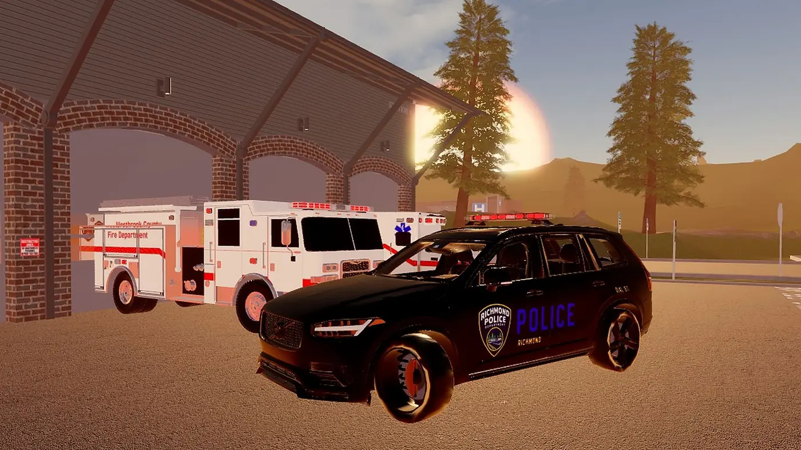
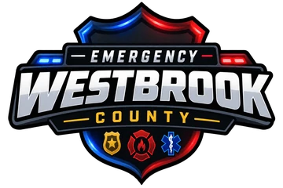
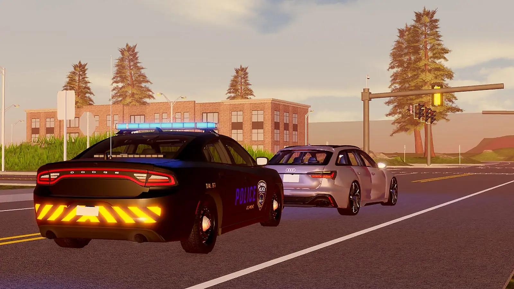

Westbrook County
Your county. Your story.
An immersive Roblox roleplay built around emergency services, vehicles, communities and everyday life.
Choose your role
Four ways to spend your time in the county.

- Law enforcement
Police Department
Protecting the community and keeping Westbrook County safe.
- Fire and rescue
Fire & Rescue
Responding to fires, accidents and emergencies across the county.
- Medical
Medical Services
Providing emergency medical care and ambulance services.
- Civilian
Civilian Operations
Live your own story across the communities of Westbrook County.
Built for realism
Detail you can see and feel, from the lights on the roof to the roads under the wheels.
Real vehicles
A growing fleet of police, fire, EMS, DOT and civilian vehicles, plus an auto shop for tints, colours, rims and repairs.
Emergency lighting
Custom ELS with realistic light patterns and a choice of lightbars on patrol vehicles.
Homes and property
Buy a house, park in your garage and make Westbrook County your own.
Private servers
Run your own community with custom liveries, custom ELS and server settings you control.
Latest update
- New police liveries
- Seasons added to the game, with fall as the default (customisable in private servers)
- Private server API keys and remote access
- New police stage 3 ELS pattern and new police lightbars
- Upgraded graphics and optimisation for lower-end devices
- Custom street light colours in private servers
- Changeable licence plates in private servers (UK, US, custom and more)
- Fixes for DOT mechanics on trucks, Fire ELS and DMV record changes
- Auto shop fix so civilian and police vehicles are no longer mixed up
- Anti-exploit upgraded after some false bans
- 2020 Audi RS6 Avant C8 and 2021 Dodge Durango added to the police team
Screenshots
Ready to answer the call?
Jump in, pick a department and start your story in Westbrook County.